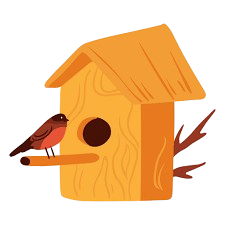
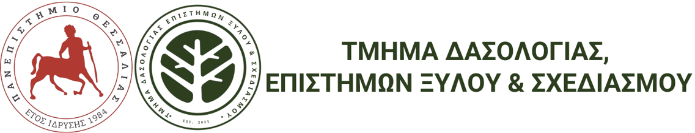

Η ορνιθοπανίδα του δάσους Νεραϊδοχωρίου της ΠΕ Τρικάλων
ως πηγή έμπνευσης για την δημιουργία πρότυπου εκπαιδευτικού υλικού για την ευαισθητοποίηση των μαθητών
Βιβλιογραφία
Alenuis, F., Revstedt, J. & Johansson, C. (2024).
Feather aerodynamics suggest importance of lift and flow predictability over drag minimization.
biorxiv.org
Alonso, B. R. (2024).
EU Task Force on the Recovery of Birds.
circabc.europa.eu
Angell, B. (2017).
How to Go From Watching Birds to Drawing Them.
audubon.org
Aspropotamos.org. (2018).
Φύση.
aspropotamos.org
Ballantyne, K. C. (2025).
Start drawing to enrich your birding, and your life.
substack.com
Birkhead, T. (2022).
How Bird Collecting Evolved Into Bird-Watching. Smithsonian Magazine.
smithsonianmag.com
Bogner, F. X. & Wilhelm, M. G. (1996).
Environmental Perspectives of Pupils. The Environmentalist.
springer.com
Boote, B. (2003).
The prime mover of the Nature Conservancy and the World Wildlife Fund.
theguardian.com
Brelsford, C. (2013).
Birding Greats – Jon Hornbuckle.
fatbirder.com
Chen, Y. et al. (2023).
Vultures as a model for testing molecular adaptations of dietary specialization in birds.
sciencedirect.com
Finnbogadóttir, G. Ýr. (2022).
Arts education with nature.
pimdi.lhi.is
Fisher, J. (1953).
Watching Birds. Collins.
archive.org
Friedmann, H. (1999).
Cuculiform | Bird Order & Adaptations.
britannica.com
Gessner, C. (1551).
Historia Animalium.
archive.org
James, L. (2023).
Archibald Thorburn: Celebrating the Artistic Legacy of a Master Wildlife Illustrator.
gallerythane.com
Jordan, C. & Children & Nature Network. (2021).
Nature and Art.
childrenandnature.org
Cornell Lab of Ornithology. (2024).
Teaching Bird ID.
birds.cornell.edu
Krug, A. (2022).
Our Favorite Bird Artists.
chirpforbirds.com
Lees, A. C. et al. (2022).
Global bird populations steadily decline.
cornell.edu
Marroquin, A. (2018).
The Life and Work of Louis Agassiz Fuertes.
biodiversitylibrary.org
McGowan, S. (2025).
5 Benefits of Using Nature to Create Art.
natureplaywa.org.au
Melhuish, F. (2020).
A cabinet of curiosities: Ole Worm’s Museum Wormianum (1655).
reading.ac.uk
Ogilvie, M., Ferguson-Lees, J. & Chandler, R. (2007).
A History of British Birds.
researchgate.net
Pettitt, G. A. (1998).
Conrad Gesner | Biography & Facts.
britannica.com
Popova, M. (2020).
250-year-old Natural History Illustrations.
themarginalian.org
Rafferty, J. P. et al. (2010).
Biodiversity | Definition & Facts.
britannica.com
Ralph, J., Droege, S. & Sauer, J. (1995).
Managing and Monitoring Birds Using Point Counts.
fs.usda.gov
Rand, A. L. (1999).
Coraciiform | Definition & Characteristics.
britannica.com
Schumm, Y. R. et al. (2023).
Diet composition of wild columbiform birds.
pubmed.ncbi.nlm.nih.gov
Sekercioglu, C. H. & Stratford, J. (2015).
Birds in Forest Ecosystems. Routledge.
Selous, E. (1901).
Bird Watching.
archive.org
Serratore, A. (2018).
Keeping Feathers off Hats—and on Birds.
smithsonianmag.com
Short, L. L. (1999).
Piciform | Characteristics & Habitat.
britannica.com
Singh, S. et al. (2009).
John James Audubon.
britannica.com
Stephens, J. L. et al. (2010).
Klamath Bird Observatory’s Landbird Monitoring Protocol.
avianknowledgenorthwest.net
Tully Jr., T. N. et al. (2009).
Passerines.
ncbi.nlm.nih.gov
Walker, S. (2020).
Bird watching for beginners.
wwt.org.uk
Wang, B. S. et al. (2010).
Seeing birds and biodiversity through science and art.
susted.com
Wildford, J. N. (2016).
Dinosaurs Among Us. The New York Times.
nytimes.com
Young, G. et al. (2008).
Roger Tory Peterson.
britannica.com
Αναπτυξιακή Τρικάλων Α.Α.Ε. Ο.Τ.Α. (2015).
Τοπικό Σχέδιο Ανάπτυξης.
Γεωργόπουλος, Α. (2002).
Περιβαλλοντική Ηθική. Gutenberg.
Γεωργόπουλος, Α. (2014).
Περιβαλλοντική Εκπαίδευση – Ζητήματα ταυτότητας. Gutenberg.
Δήμου, Α. (2008).
Ιστορία Νεραϊδοχωρίου.
neraidohori.info
ΕΡΤ Α.Ε. (2023).
Κακοκαιρία Daniel: Τα Τρίκαλα θαμμένα κάτω από τη λάσπη.
ertnews.gr
Λεγάκις, Α. et al. (2008).
Μελέτη των Μεταναστευτικών στην Ελλάδα.
Μάναλης, Π. et al. (2005).
Ο παράγων χρόνος στα Σχολικά Προγράμματα Περιβαλλοντικής Εκπαίδευσης.
Μέμος, Σ. (2022).
Πασχάλης Δουγαλής – Βίντεο.
kynigesia.gr
Μηνόγλου, Δ. (2000).
Η χλωρίδα του Πανεπιστημιακού δάσους Περτουλίου.
Μητράκου, Α. (2019).
Ecology Of Avian Dreams – The Birds of Greece.
portesmagazine.com
Οικονομοπούλου, Ε. (2007).
Έλατη – Περτούλι – Ασπροπόταμος.
athinorama.gr
Ρηγόπουλος, Γ. (1979).
Ο Θεόδωρος Πουλάκης και ο κύκλος της Αποκαλύψεως.
Σπανουδάκη, Μ. (2021).
Αλέκος Φασιανός.
hellenicdiaspora.org
Σπίνος, Κ. (2024).
Ζεύξις από την Ποντοηράκλεια.
arxeionpolitismou.gr
Σφουγγάρης, Α. (2005).
Τι είναι Βιοποικιλότητα;
© Πτυχιακή εργασία | Βασιλοπούλου Βαΐα
Πανεπιστήμιο Θεσσαλίας | Τμήμα Δασολογίας, Επιστημών Ξύλου & Σχεδιασμού
Aκαδημαϊκό έτος 2025-26
